第 3 章 伪随机数#
本章解决：蒙特卡罗的一切随机性最终都来自一串 \([0,1)\) 上的"均匀随机数"——而计算机是确定性机器，造不出真随机。本章回答：伪随机数是什么、好生成器要满足什么、线性同余生成器怎么写、满周期怎么证、结构缺陷（超平面）怎么暴露、RANDU 为何身败名裂、洗牌与组合如何补救，以及怎么用统计检验给生成器"体检"。 对照教材：Dunn & Shultis《Exploring Monte Carlo Methods》§3.1–3.10（主线，小节编号跟随它）；Shonkwiler & Mendivil《Explorations in Monte Carlo Methods》§1.3（要求清单、平方取中、模算术与满周期定理）与附录 A（卡方与 KS 检验）。建议先读 S&M §1.3 建立要求清单，再进 D&S 的技术细节。
| 关键词 | 事实 |
|---|---|
| 伪随机数 | 确定性算法产出的、统计上像随机的数列；种子相同则序列相同（可复现） |
| 线性同余生成器（LCG） | \(x_{n+1}=(a x_n + c) \bmod m\)，1970—90 年代的主流 |
| 满周期 | \(c\ne 0\) 时由 Hull–Dobell 三判据决定；\(c=0\) 时要 \(a\) 是模 \(m\) 的原根 |
| 结构缺陷 | 一切 LCG 的 \(k\) 元组都躺在超平面上（Marsaglia）；RANDU 三维只有 15 张平面 |
| 检验 | 卡方（分组频率）+ KS（经验 CDF 距离）；只能拒绝随机性，不能证明随机性 |
本章代码：nb/ch03.ipynb（7 个实验全部实跑：平方取中普查、Hull–Dobell 验证、RANDU 平面、洗牌对比、Wichmann–Hill、卡方与 KS；确定性生成器自带种子，结果可复现）。
3.0 本章导图#
3.1 真随机与伪随机：对生成器的要求#
第 1、2 章的一切模拟都建立在一串均匀分布在 \((0,1)\) 上的随机数 \(\rho_i\) 之上。但数字计算机按设计就不可能产生随机结果——它是确定性机器。要拿"真随机"，理论上可以外接一个物理随机源：放在放射性源旁边的盖革计数器的两次点击间隔、电子线路里的白噪声（D&S §3 开篇）。D&S 随即指出这条路灾难性地不可行，原因有二：
- 不可复现。调试代码的前提是每次运行用同一串数；若每次运行随机源都吐出新序列，一个 bug 你都抓不住——同一代码在不同机器上也得不到同样结果。
- 不可行且太慢。给每台计算机配外设不现实；把真随机数做成表格读入也不行——Marsaglia 1995 年的光盘存了 \(4.8\times 10^9\) 个真随机数（两个伪随机生成器加三个物理装置合成），但现代模拟动辄要更多，而且从外部文件读一个数的时间在现代蒙特卡罗里完全不可接受。
折中方案就是伪随机数生成器（pseudorandom number generator，RNG）：一个确定性算法，给定前面的数（通常只要最后一个），就能高效算出下一个。Designing better generators 至今仍是活跃的研究领域；D&S 特意警告：历史上大量研究用了有严重缺陷的生成器而不自知，"如果这些论文消失，图书馆能腾出不少书架"。认清你手里生成器的出身，别随手改动它。
S&M §1.3.1 把对 RNG 的要求列成五条，D&S §3.3 补上一条可移植性：
| # | 要求 | 为什么 |
|---|---|---|
| 1 | 快（fast） | 典型应用要消耗百万到十亿级随机数 |
| 2 | 可复现（repeatable） | 调试的前提：记住种子即可重放同一序列 |
| 3 | 可分析（amenable to analysis） | 分布性质要能被数学证明，不能只靠感觉 |
| 4 | 长周期（long period） | 一切 RNG 终将循环；32 位机上 \(2^{30}\approx 10^9\) 易得，复杂应用想要 \(10^{18}\) 到 \(10^{170}\) |
| 5 | 对应用显得随机（apparently random） | 最重要的品质：能通过真随机序列能通过的那些统计检验 |
| 6 | 可移植（portable，D&S） | 用高级语言写成、不依赖特定机器的字长与指令技巧，跨机器结果一致 |
关于周期，S&M 有一个精确的观察：单种子 RNG 的周期不可能超过种子的可能取值个数——种子一旦在序列中重复出现，其后的一切必然重演。所以 S&M 把 RNG 比作一本极长的书：种子只是书签，决定从哪里开始读；种子相同，读到的序列就相同；读到"书尾"就绕回去（未必绕回开头）。
拓展：准随机数与真随机
D&S 还区分了一个名字相近的概念：准随机数（quasirandom numbers）——刻意不求随机、只求极端均匀的确定性点列（如 Sobol 序列），用于把蒙特卡罗求积的收敛速度从 \(N^{-1/2}\) 再往上提（D&S §5.11.2 的应用，本笔记第 5 章后可见）。另一头，真随机在 S&M §1.3 末尾有个现代版本：量子计算机。制备一个量子比特，过一个 Hadamard 门进入 \(|0\rangle\) 与 \(|1\rangle\) 的叠加态，测量时它以物理规律保证的等概率塌缩成 0 或 1——这种随机无法预测也无法复现，所以只能当种子源用，不能当模拟的主力。
拓展：复杂 ≠ 随机——Knuth 的自打脸
"显得随机"这条要求看似容易蒙混：把算法写得足够复杂不就行了？S&M 引用 Knuth 的亲身教训：Knuth 在《半数值算法》里描述过自己早期设计的一个生成器，对 10 位十进制数轮流做"加 \(5\times 10^9\)、平方取中、乘 1001001001 取模、数字全体减一、高低五位居换"等 13 步操作，步骤数还由数字本身动态决定。复杂得像模像样——结果第一次运行就收敛到了不动点 6065038420（这个数经过整套变换还是它自己）；换个种子再跑，又掉进一个长度 3178 的环。教训原话是："随机数不应当用随机选来的方法生成。"复杂性可以掩盖简单行为，但制造不出随机性。要判断好坏，只能靠下一节的"简单到可分析"的骨架 + §3.8 的严格检验。
3.2 平方取中与它的教训#
历史上第一个系统的伪随机生成方案来自冯·诺依曼（1940 年代，ENIAC 时代）：平方取中（middle-square）。以 4 位十进制为例：把当前 4 位数平方（左侧补零到 8 位），抽正中间的 4 位作下一个数。想法很自然——乘法会让数字充分搅动，中间几位"看起来"随机。S&M §1.3.2 还给了个"高配版"：反复计算 \(\sin\) 值、取小数点后第 5 位起的数字当随机数（middle-sine）；但算 100 万个 \(\sin\) 要约 2 秒，而 Python 内置生成器同样的活只要 0.2 秒（向量化 0.01 秒）——用超越函数造随机，慢是硬伤。冯·诺依曼用 \(x^2\) 代替 \(\sin x\)，就是这个原因。
def middle_square(seed, digits=4):
x, seq, seen = seed, [seed], {seed}
while True:
s = f"{x * x:0{2*digits}d}" # 平方，左侧补零到 2d 位
x = int(s[digits//2 : digits//2 + digits]) # 抽中间 d 位
if x in seen: # 状态重复 → 环闭合
seq.append(x)
return seq
seq.append(x)
seen.add(x)
for s in (1234, 4353, 1000, 3792, 6100):
seq = middle_square(s)
L = len(seq) - 1 - seq.index(seq[-1]) # 进入环的长度
print(f"种子 {s:4d}: {' -> '.join(map(str, seq[:8]))} ... 步数 {len(seq)-1}，环长 {L}（环值 {seq[-1]}）")
种子 1234: 1234 -> 5227 -> 3215 -> 3362 -> 3030 -> 1809 -> 2724 -> 4201 ... 步数 57，环长 1（环值 0）
种子 4353: 4353 -> 9486 -> 9841 -> 8452 -> 4363 -> 357 -> 1274 -> 6230 ... 步数 69，环长 4（环值 6100）
种子 1000: 1000 -> 0 -> 0 ... 步数 2，环长 1（环值 0）
种子 3792: 3792 -> 3792 ... 步数 1，环长 1（环值 3792）
种子 6100: 6100 -> 2100 -> 4100 -> 8100 -> 6100 ... 步数 4，环长 4（环值 6100）
前 40 步看起来还真像随机数（图 3.1 左）。但把 4 位数的全部 \(10^4\) 个种子普查一遍（图 3.1 右），命运只有两种：
- 1968 个种子掉进 0——一旦中间 4 位是 0，之后永远是 0；另有 295 个种子掉进非零不动点（如 \(3792^2 = 14379264\)，取中还是 3792）；
- 其余 7737 个种子全部进入唯一的 4 步环 \(2100\to 4100\to 8100\to 6100\to 2100\)。
也就是说，4 位平方取中的最大周期只有 4，且近四分之一 trajectories 以归零告终。S&M 的评语：短周期 + 快速循环是它甩不掉的病，"对更好生成器的搜寻就此开始"。它的历史地位是给出两条硬标准：状态不许塌缩（要避开 0 这类吸收态）、周期要长且可论证——这两条正好是下一节 LCG 的设计目标。
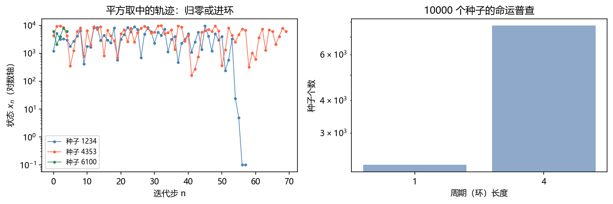
3.3 线性同余生成器#
3.3.1 模算术三件套（S&M §1.3.3）#
LCG 的一切性质都写在模算术里，先把工具备齐（以下全是整数）。称 \(a\) 同余于 \(b\) 模 \(m\)，记 \(a\equiv b \bmod m\)，如果 \(m \mid (a-b)\)。三条基本事实：
- 同余是等价关系（自反、对称、传递）：传递性一行可证——\(a-b = pm\)、\(b-c = qm\) 相加得 \(a-c = (p+q)m\)。
- 除法算法定理：给定整数 \(a\) 与 \(m>0\)，存在唯一商 \(q\) 与余数 \(r\) 使 \(a = qm + r\)，\(0\le r < m\)。于是全体整数被剖分成等价类 \([0],[1],\dots,[m-1]\)，互斥且穷尽；记 \(r = a \bmod m\) 为该类的代表元。
- 钟算（clock arithmetic）：模 \(m\) 的加法与乘法就是普通运算后再取余：\((x \bmod m \pm y \bmod m)\bmod m = (x\pm y)\bmod m\)，\(((x\bmod m)(y\bmod m))\bmod m = (xy)\bmod m\)。
最后一条让"先取余再乘"和"先乘再取余"等价——这是后面所有推导只看余数的合法性来源。再补一条：若 \(a\) 与 \(m\) 互素（除 1 外无公因数），则 \(a\) 在模 \(m\) 下可除：\(ax \equiv b \bmod m\) 对任意 \(b\) 有唯一解。
3.3.2 LCG 与乘同余#
Lehmer 1951 年提出的线性同余生成器（linear congruential generator，LCG；D&S §3.1）只有一行：
其中 \(a>1\) 叫乘子（multiplier），\(c\) 叫增量（increment），\(m\) 叫模数（modulus）。从种子 \(x_0\) 出发，整数序列落在 \(0\le x_i < m\)，除以 \(m\) 归一化成 \([0,1)\) 上的
最常用的特例取 \(c=0\)，即乘同余生成器（multiplicative congruential generator）：
模算术立刻给出两个事实。其一，\(x_i\) 永远到不了 0（只要 \(x_0\not\equiv 0\)）：\(ax_i \equiv 0 \bmod m\) 要求 \(m \mid ax_i\)，而 \(a\) 与 \(m\) 互素时要求 \(m\mid x_i\)，即 \(x_i = 0\)——所以 \(\rho_i \in (0,1)\) 开区间，永远不吐出恰好 0 或 1（很多模拟正需要这一点）。其二，序列的通项一行归纳即得：\(x_j \equiv a x_{j-1} \equiv a\cdot a^{j-1}x_0 = a^j x_0 \pmod m\)，即
（这正是 D&S 的式 (3.4)，它还意味着乘同余天然支持"跳跃"，见 §3.6）。\(c\ne 0\) 时 0 反而可达（S&M 的例子 \(a=5, c=1, m=8\)，种子 0：\(0,1,6,7,4,5,2,3,0\) 遍历全环），这是两族生成器性格不同的根源。
3.3.3 满周期三判据：Hull–Dobell 定理的完整推导#
周期是 LCG 的命门：状态至多 \(m\) 个，序列一旦重复某个状态就进入死环。S&M §1.3.3 引述的定理（归于 Hull–Dobell，见 Knuth）给出 \(c\ne 0\) 情形对每个种子都取满周期 \(m\) 的充要条件。定理不跳步地证如下。
定理（Hull–Dobell） LCG \(f(x)=(ax+c)\bmod m\) 对每个种子周期都为 \(m\)，当且仅当：
- \(\gcd(c, m)=1\)；
- 对每个整除 \(m\) 的素数 \(p\)，\(p \mid (a-1)\)；
- 若 \(4 \mid m\)，则 \(4 \mid (a-1)\)。
记 \(b = a-1\)，\(S_t = 1 + a + a^2 + \cdots + a^{t-1}\)。
第一步（周期的方程）。对迭代次数归纳：
\(t=1\) 时左边 \(= ax + c - x = bx + c\)，成立；若对 \(t\) 成立，则
所以种子 \(x\) 的周期是满足 \(m \mid S_t(bx+c)\) 的最小正整数 \(t\)。
第二步（三个条件合起来消去种子）。条件 2、3 说：每个素数 \(p \mid m\) 都有 \(p \mid b\)（\(p=2\) 且 \(4\mid m\) 时更要求 \(4\mid b\)）。于是对任意种子 \(x\) 与任意素数 \(p \mid m\)：
（末一步用条件 1：\(p \nmid c\)）。所以 \(bx + c\) 与 \(m\) 的每个素因数都不沾边，即 \(\gcd(bx+c,\,m)=1\) 对一切种子成立。这样周期方程简化为：
第三步（提升：\(p^e \mid S_t\) 当且仅当 \(p^e \mid t\)）。对每个素数幂 \(p^e \parallel m\) 分情形。注意 \(a = 1+b\) 且上面积攒的条件给出 \(p \mid b\)（\(p\) 奇），或 \(4 \mid b\)（\(p=2, e\ge 2\)）。
- \(p\) 奇、\(p\mid b\)：由提升指数引理（见下方拓展框）\(v_p(a^t - 1) = v_p(a-1) + v_p(t)\)，而 \(S_t = (a^t-1)/(a-1)\)，所以 \(v_p(S_t) = v_p(t)\)。于是 \(p^e \mid S_t \iff p^e \mid t\)。
- \(p=2,\ e\ge 2\)（即 \(4 \mid m\)）：\(a\) 为奇数。\(t\) 为奇数时，\(S_t\) 是 \(t\) 个奇数之和，故 \(S_t\) 奇，\(v_2(S_t) = 0 = v_2(t)\)。\(t\) 为偶数时，对 \(4 \mid a-1\) 的情形提升指数引理给 \(v_2(a^t - 1) = v_2(a-1) + v_2(t)\)，同样得 \(v_2(S_t) = v_2(t)\)。
- \(p=2,\ e=1\)（即 \(2 \parallel m\)）：只需 \(2 \mid S_t \iff 2\mid t\)，而 \(S_t\) 是 \(t\) 个奇数之和，奇偶性与 \(t\) 相同，得证。
第四步（收尾）。三情形合并：
最小这样的 \(t\) 就是 \(m\) 本身——周期对每个种子都恰好是 \(m\)。充分性证毕。
必要性（三条各缺一不可，四段短证）：
- 若 \(\gcd(a,m) > 1\)：仿射映射 \(f(x) = ax+c \bmod m\) 不单射（\(f(x)=f(x') \iff m \mid a(x-x')\)，取差为 \(m/\gcd(a,m)\) 的倍数即可）。而周期 \(m\) 的轨道是遍历全部 \(m\) 个状态的单环，环上每个状态的后继必须唯一，单射是必需的——矛盾。
- 若 \(d=\gcd(c,m) > 1\)：周期 \(m\) 的轨道遍历所有状态，必经 0；但从 \(x=0\) 起，\(f^t(0) = c\,S_t\) 恒是 \(d\) 的倍数，整条环困在 \(d\) 的倍数里（至多 \(m/d < m\) 个状态）——矛盾。
- 若某奇素数 \(p \mid m\) 而 \(p \nmid b\)：模 \(p\) 上 \(a-1\) 可逆，不动点方程 \((a-1)x^* \equiv -c \pmod p\) 有解；种子取 \(x^*\) 时整条轨道 \(\bmod\ p\) 恒等于 \(x^*\)，至多访问 \(m/p < m\) 个状态——矛盾。（\(p=2\) 且 \(a\) 偶时同理，轨道困在单一奇偶类。）
- 若 \(4 \mid m\) 而 \(4 \nmid b\)：由上一条（\(p=2\) 部分）知 \(2 \mid b\)，故 \(b \equiv 2 \pmod 4\)、\(a \equiv 3 \pmod 4\)；由第一条必要性 \(\gcd(c,m)=1\) 知 \(c\) 奇。模 4 上 \(f(f(x)) = a^2 x + c(a+1) = 9x + 4c \equiv x \pmod 4\)，即 \(f^2 = \mathrm{id}\)：轨道 \(\bmod\ 4\) 只在两个剩余类间振荡，至多访问 \(2 \cdot \frac m4 = \frac m2 < m\) 个状态——矛盾。∎
拓展：提升指数引理（LTE）一行证法
上面第三步引用的引理：奇素数 \(p \mid (a-1)\) 时 \(v_p(a^t - 1) = v_p(a-1) + v_p(t)\)（\(v_p\) 是 \(p\) 的幂次）。证法梗概：写 \(a = 1 + b\)、\(p \mid b\)，二项式展开 \(a^t - 1 = tb + \binom{t}{2}b^2 + \cdots\)，第一项含恰 \(v_p(t)+1\) 个 \(p\)（\(p\nmid b/p\) 部分由归纳保证），其余项含 \(b^2\) 的更高幂次，对 \(t\) 归纳即得。\(p = 2\) 且 \(4 \mid a-1\) 时结论同形（此时 \(a+1 \equiv 2 \pmod 4\) 恰贡献一次 2）。这是初等数论的标准引理，Knuth《半数值算法》§3.2.1.2 的定理 A 给了完整证明。
验证（nb 实验 2，图 3.2）：取 \(m = 16\)，三组参数对照——
def lcg_period(a, c, m, seed):
x, t = (a * seed + c) % m, 1
while x != seed:
x = (a * x + c) % m
t += 1
return t
for a, c, m, tag in [(5, 1, 16, "满足①②③"), (3, 1, 16, "违反③（4|m 但 4 不整除 a−1）"),
(5, 2, 16, "违反①（gcd(c,m)=2）")]:
ps = {lcg_period(a, c, m, s) for s in range(m)}
print(f"a={a}, c={c}, m={m}: {tag} -> 各种子周期 = {ps}")
a=5, c=1, m=16: 满足①②③ -> 各种子周期 = {16}
a=3, c=1, m=16: 违反③（4|m 但 4 不整除 a−1） -> 各种子周期 = {8}
a=5, c=2, m=16: 违反①（gcd(c,m)=2） -> 各种子周期 = {8}
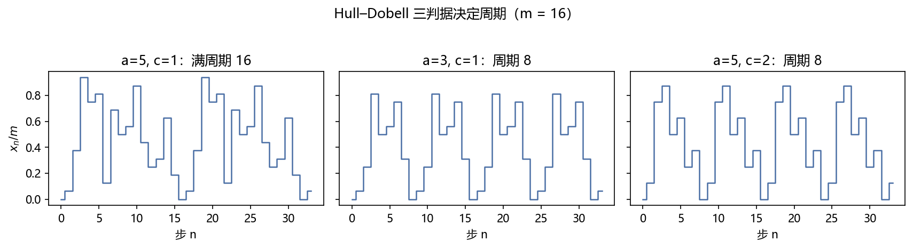
S&M 指出这定理的直接推论：对 \(m = 2^{32}\)，取 \(c = 1\)、\(a = 4\ell + 1\)（任意整数 \(\ell > 0\)）就满足全部判据——现代语言里"自动溢出即取模"的 \(m = 2^w\) 生成器（如 \(a = 6364136223846793005, c = 1442695040888963407\) 的 PCG 家族内核，见 §3.7）走的都是这条路。
3.3.4 乘同余特例：原根与满周期 \(m-1\)#
\(c=0\) 时条件 1 必然失败（\(\gcd(0,m) = m\)），满周期 \(m\) 不可得；但 §3.3.2 已证 0 不可达，所以上界是 \(m-1\)。何时达到 \(m-1\)？当 \(m\) 为素数且 \(a\) 是模 \(m\) 的原根（primitive root）：即 \(a^k \equiv 1 \pmod m\) 的最小 \(k\) 恰为 \(m-1\)——此时 \(a\) 的幂把全部 \(m-1\) 个非零剩余遍历一遍。
D&S 例 3.2 的完整演示（\(m=13\)）：逐个试出最小原根 \(a_1 = 2\)（\(2^k \bmod 13 = 2,4,8,3,6,12,11,9,5,10,7,1\)，第 \(12\) 位才回到 1）。分解 \(m-1 = 12 = 2^2\cdot 3\)，与 12 互素的指数是 \(n = 1, 5, 7, 11\)，而 \(a_1^n \bmod m\) 都是原根（Fishman & Moore 1986 的构造引理），所以原根共四个：
对照 D&S 例 3.1 的穷举表（\(x_{i+1} = a x_i \bmod 13\)，12 个乘子逐一跑）：恰好 \(a = 2, 6, 7, 11\) 四个乘子满周期，其余的周期只有 6、4、3 或 2——原根判据与穷举完全吻合。这构造还有个工程意义：小原根是坏乘子（\(x_i\) 小时序列会爬一段小数字的阶梯，太不像随机），要挑 \(a \lesssim \sqrt m\) 的大原根，就用 \(a = a_1^n \bmod m\) 从小原根长出来。
原书笔误
D&S §3.5.2 说"The factors of \(2^{31}-1\) are \(2, 3, 7, 11, 31, 151, 331\)"——\(2^{31}-1 = 2\,147\,483\,647\) 是梅森素数，因数只有它自己；这份清单实为 \(m - 1 = 2^{31}-2\) 的素因数（实跑验证：\(2\cdot 3^2\cdot 7\cdot 11\cdot 31\cdot 151\cdot 331 = 2147483646\)，与 nb 实验 2 的分解一致）。同节"Is the multiplier \(m = 16\,807\) the optimum multiplier"把乘子写成了 \(m\)，应为 \(a = 16\,807\)。习题 7 的"梅森素数 \(m = 2^8 - 1 = 31\)"应为 \(2^5 - 1 = 31\)（\(2^8-1 = 255\) 不是素数）。
3.4 生成数的结构缺陷#
3.4.1 一切 LCG 都躺在超平面上#
满周期 + 边际均匀只是及格线。D&S §3.2 引 Marsaglia 1968 年那篇著名论文的标题——"随机数主要躺在平面上"（Random numbers fall mainly in the plane）：任何线性同余序列的 \(k\) 元组 \((x_i, x_{i+1}, \dots, x_{i+k-1})\) 当作 \(k\) 维坐标画出来，不充满空间，而是落在有限张（可能很少）平行超平面上，至多 \(m^{1/k}\) 张，且构成一个规则的 \(k\) 维格（lattice）。
原因一眼可破：整数点满足 \(x_{i+1} \equiv a x_i \pmod m\)，即 \(x_{i+1} - a x_i\) 只能取 \(m\) 的整数倍——在 \([0,m)^2\) 里这就是一族斜率 \(a\) 的平行线 \(x_{i+1} = a x_i - jm\)。
D&S 用 \(m = 29\) 的小例子让这件事肉眼可见（图 3.3、图 3.4）：满周期乘子里，\(a = 3\) 的 28 个点只压在 3 条斜率 3 的直线上（另一方向 10 条斜率 \(-2/9\) 的线，相邻点距 3.16 对 9.22，覆盖极不均）；\(a = 8\) 的点则铺得均匀得多（斜率 \(3/4\) 的 6 条线与斜率 \(-5/3\) 的 7 条线，点距 5.00 对 5.83，几乎等距分布）。两个都是满周期生成器，好坏天差地别——周期长短根本不是唯一的品质指标。
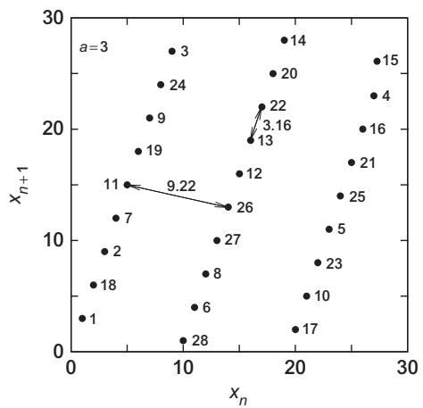
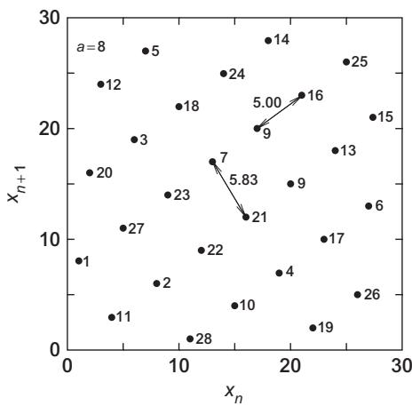
实跑复现（图 3.5）：数直线族的技巧是把"常数 \(= m\) 的整数倍"里不同的倍数个数数出来，与书的数字逐一对上：
def count_lines(xi, p, q, m):
"""直线族 p·x_{n+1} + q·x_n = 常数（常数必为 m 的倍数）的条数"""
w = p * xi[1:] + q * xi[:-1]
return len(np.unique(w // m))
# a=3: 斜率 3 的直线 3 条；斜率 −2/9 的直线 10 条
# a=8: 斜率 3/4 的直线 6 条；斜率 −5/3 的直线 7 条
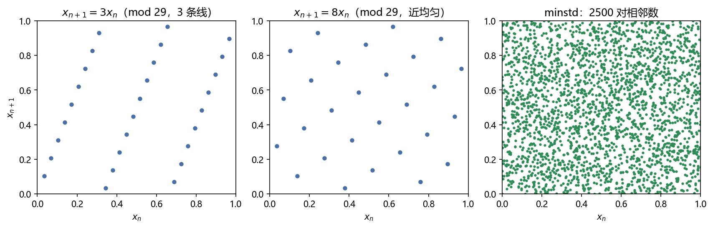
3.4.2 谱检验、平面数与点距（D&S §3.4）#
晶格不可避免，就退而求其次：挑让晶格最细最匀的乘子。D&S §3.4 给了三把尺子（记满周期长度 \(t(m)\)：素数模 \(t = m-1\)；\(m = 2^\alpha\) 时 \(t = m/4\)）。
其一，谱检验（spectral test）：\(k\) 维超平面间距 \(d_k(a,m)\) 有下界（Cassels 1959）
平面越密（间距越小）覆盖越匀，所以取统计量 \(S_{1,k} = d_k^{\min}/d_k(a,m) \in (0,1]\)，越靠近 1 越好（间距压到理论下限）。
其二，平面数（Marsaglia 界）：\(N_k(a,m) \le [k!\, t(m)]^{1/k}\)，统计量 \(S_{2,k} = N_k / [k!\,t(m)]^{1/k}\)，同样是越大越好——平面多到允许的上限。
其三，点距：相邻 \(k\) 元组的欧氏距离 \(r_k(a,m)\) 应尽量大（点与点别扎堆），Cassels 给 \(r_k \le 1/\big(d_k^{\min} [t(m)]^{2/k}\big)\)，统计量 \(S_{3,k} = r_k\, d_k^{\min} [t(m)]^{2/k}\)，越大越好。
D&S §3.4.4 再补一个 Beyer 商（Beyer quotient）：把晶格写成基向量 \(\mathbf v_1,\dots,\mathbf v_k\)，商 \(q_k = \min|\mathbf v_i| / \max|\mathbf v_i|\) 衡量晶格"是否各向等距"，越接近 1 越好。 Fishman [1990, 1996] 对 \(m = 2^{32}\)、\(m = 2^{48}\) 与 \(m = 2^{31}-1\) 的穷举式搜索，用的就是这组统计量（结果见 §3.5）。
3.4.3 RANDU 的 15 张平面：恒等式逐行推导#
IBM 1960 年代的 RANDU（\(x_{n+1} = 65\,539\,x_n \bmod 2^{31}\)）在二维散点图上毫无破绽，却是史上最出名的坏生成器。D&S 习题 9 点破：它的所有三维三元组 \((x_i, x_{i+1}, x_{i+2})\) 落在仅 15 张平面上。推导只要一行代数，逐行写出：
关键在 \(65\,539 = 2^{16} + 3\)。由递推关系（一切同余在 \(\bmod\ 2^{31}\) 下进行）：
凑 \(x_{i+2} - 6x_{i+1} + 9x_i\)：
（第三行把 \(x_{i+1}\) 用第一条关系代换；第五行用 \(x_{i+1} - 3x_i \equiv 2^{16}x_i\)。）于是每个整数三元组都严格满足
归一化 \(u = x/2^{31} \in [0,1)\) 后 \(c = 9u_i - 6u_{i+1} + u_{i+2}\) 是整数，而夹逼给出 \(c > 9\cdot 0 - 6\cdot 1 + 0 = -6\) 与 \(c < 9\cdot 1 - 0 + 1 = 10\)，所以
实跑实锤（图 3.6、图 3.7）：三维散点把视线转到平面内方向（与法向量 \((9,-6,1)\) 垂直的 \((2,3,0)\)）时，RANDU 的点云塌成 15 条"百叶窗"，minstd 则铺满；投影直方图里 RANDU 的 \(c\) 值精确取遍 \(\{-5,\dots,9\}\) 共 15 根尖峰（\(m = 2^{31}\) 时浮点表示精确，尖峰位置分毫不差），minstd 是连续填充。用 Marsaglia 的平面数上界量化一下：\(N_3 \le (6\cdot 2^{29})^{1/3} \approx 1477\)，RANDU 只用了 15 张，\(S_{2,3} = 15/1477 \approx 0.01\)——谱检验下惨不忍睹。D&S 的提醒很实际：若用这种三元组给输运计算定粒子源位置，源就被系统性欠采样了。
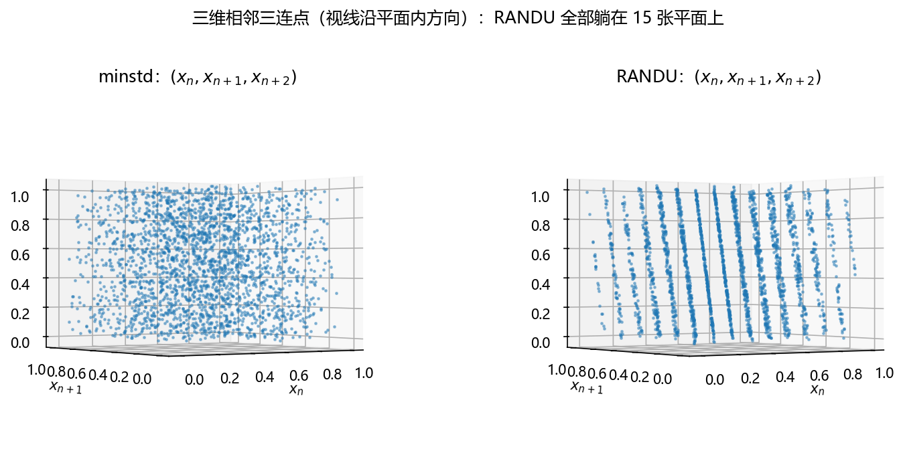

3.5 实用生成器#
3.5.1 模数取 2 的幂#
早期计算机上 \(m\) 取 2 的幂有巨大速度红利：乘除 \(2^n\) 就是移位，模 \(2^w\) 干脆由字长自动完成（高位溢出丢弃，免费取模）。代价是周期上限打折：\(m = 2^\alpha\)（\(\alpha \ge 3\)）的乘同余最大周期只有 \(m/4 = 2^{\alpha-2}\)（Knuth），且取到它要求 \(a \bmod 8 \in \{3, 5\}\)（即 \(a \equiv 3,5 \pmod 8\)）并且种子是奇数——偶种子会让低位迅速塌掉。经验上 \(a \equiv 5 \pmod 8\) 的点分布比 \(a \equiv 3\) 更匀。 nb 实验 2 的验证：RANDU（\(a = 65539 \equiv 3 \pmod 8\)，奇种子）周期恰为 \(2^{29} = 536\,870\,912\)，正好 \(m/4\)。
Fishman [1990] 用 §3.4.2 的统计量穷举出了 \(m = 2^{32}\) 与 \(m = 2^{48}\) 的最优乘子（都形如 \(5^n \bmod 2^\alpha\)，且成对出现——一对互为模逆元 \(a^{-1}\)，产出同一序列的正反两个方向）。工业级例子：粒子输运代码 MCNP 采用 \(m = 2^{48} \approx 2.81\times 10^{14}\)、\(a = 5^{19} = 19\,073\,486\,328\,125\)（实跑核验 \(5^{19} < 2^{48}\)），周期 \(2^{46} \approx 7.04\times 10^{13}\)，并且给每条新粒子历史跳跃 stride \(= 152\,917\)（见 §3.6）制造相互独立的子流。
3.5.2 素数模与"最小标准"生成器 minstd#
素数模 \(m\) 配原根乘子可得满周期 \(m - 1\)（§3.3.4）。最有名的选择是梅森素数 \(m = 2^{31}-1 = 2\,147\,483\,647\)（恰好贴合 32 位字长）：最小原根是 7，于是 \(7^5 = 16\,807\) 也是原根（构造：指数 5 与 \(m-1 = 2\cdot 3^2 \cdot 7 \cdot 11\cdot 31\cdot 151\cdot 331\) 互素）。Lewis, Goodman & Miller 1969 年为 IBM System/360 提出的
经 Park & Miller 1988 年论文《好生成器难找》（"Good Ones Are Hard to Find"）背书为最小标准（minimal standard）生成器，常称 minstd。Park–Miller 的"最小标准"是三条最低门槛：满周期；序列"随机"；能在 32 位整数算术里高效实现（§3.5.3）。他们同时强调这不是理想生成器——候选乘子的总量大得惊人：\(m = 2^{31}-1\) 有 \(534\,600\,000\) 个原根（满周期这一条就淘汰约 75% 的乘子）；Fishman & Moore [1986] 对其余做谱检验，只有 410 个乘子在各维间距达到理论最优的 25% 以内——16 807 不在其列；再叠加"可 Schrage 编码"约束后仅 23 093 个存活，放宽到 30% 后最好的两个是 \(a = 48\,271\) 与 \(a = 69\,621\)。而 Fishman–Moore 的穷举冠军是 \(a = 62\,089\,911\)（在 \(r < q\) 的可编码乘子里最佳的是 69 621）；16 807 及其他常用乘子的检验成绩明显更差。minstd 至今仍被广泛使用——作为比较基准，这是它最稳当的角色。
拓展：怎么验证一个乘子是原根（不用跑 20 亿步）
周期 \(m-1 = 2\,147\,483\,646\) 不可能逐个迭代去数。快验法：分解 \(m-1\) 的素因数 \(\{2, 3, 7, 11, 31, 151, 331\}\)，对每个 \(p\) 检查 \(a^{(m-1)/p} \not\equiv 1 \pmod m\)（用快速幂 pow(a, (m-1)//p, m)，毫秒级）。全部不等于 1 ⟺ \(a\) 的阶恰好是 \(m-1\) ⟺ 原根。nb 实验 2 如此验证了 \(16\,807\) 是原根（周期 \(= m-1 = 2\,147\,483\,646\)）与 RANDU 的阶是 \(2^{29}\)。§3.8 还会看到这个乘子的"体检报告"。
3.5.3 Schrage 编码：32 位整数不溢出#
minstd 的实现有个当年很实际的坑：\(1 \le x_i \le m-1\) 时乘积 \(a x_i\) 高达 \(2.1\times 10^{13}\)，超出 32 位整数。用双精度浮点当然可以（D&S 给的 FORTRAN DMOD 版），但慢；Schrage 1979 的技巧只用 32 位整数。把模数近似分解：
minstd 的参数给 \(q = 127\,773\)、\(r = 2\,836\)（\(r < q\)，这是可编码性的门槛）。写 \(x = qk + s\)（\(k = \lfloor x/q \rfloor\)，\(s = x \bmod q\)），则
所以 \(x_{i+1} = a(x_i \bmod q) - r k_i \pmod m\)，其中 \(k_i = \lfloor x_i / q \rfloor\)。两项都不会溢出：\(a s \le a(q-1) = aq - a = m - r - a < m\)；而 \(k \le a\)（因 \((m-1)/q = a + (r-1)/q < a+1\)）给出 \(rk \le ar < m\)（末步用 \(r(a-1) < aq\)，即 \(r < q\)）。于是
每一步的两个乘积都在 32 位之内。D&S 引 Press et al. [1996] 的 FORTRAN 实现并给出标准校验点：种子 \(x_1 = 1\) 时第 10 001 个数必须是 \(x_{10\,001} = 1\,043\,618\,065\)——实跑 pow(16807, 10000, 2**31-1) 恰好等于它（因为 \(x_{10\,001} = a^{10\,000} x_1\)），一行核对编码正确性。
3.5.4 minstd 的缺陷#
Park–Miller 自己列的第三条"高效实现"是护身符也是枷锁：能 Schrage 编码要求 \(r < q\)，这排除了所有谱检验意义下的最优乘子。缺陷还不止于此（D&S §3.5.5）：minstd 会约每 \(10^6\) 个数吐出一个 \(< 10^{-6}\) 的 \(\rho_i\)，而它后面紧跟着一个小于 0.017 的数——对"极小概率事件"类模拟（比如辐射屏蔽里穿深穿透的概率），这种低阶串相关足以扭曲结果；更隐蔽的低阶串相关普遍存在于一切小乘子同余生成器里。治本的经验法则：乘子应约等于 \(\sqrt m\)（如 62 089 911 对 \(m = 2^{31}-1\)），但这与 \(r < q\) 约束冲突。出路有两条：换更大的模数（§3.5.1 的 \(m = 2^{48}\)），或者洗牌（§3.6）与组合（§3.7）。
3.6 改善手段：洗牌与跳跃#
3.6.1 Bays–Durham 洗牌#
LCG 的病根在"每个值后面永远跟同一个值"。Bays & Durham [1976] 的主意：用生成器自己的输出打乱自己的输出。拿一张 \(k\) 项的表 \(T\) 装生成器的数，输出时按上一发的输出值随机指到表里某项、把该项吐出、再用一个新的原始数补位——同一个 \(x\) 之后跟的就不总是同一个数了。D&S §3.6 的六步算法（原始数 \(x_i\)，输出流 \(y_i\)）：
- 初始化：\(T_j \leftarrow x_j\)（\(j = 1,\dots,k\)）；输出 \(y_1 = x_{k+1}\)；置 \(i = 1\)。
- 算表指针 \(j = 1 + \lfloor k\, y_i / (m-1) \rfloor\)。
- \(i \leftarrow i + 1\)。
- 输出 \(y_i = T_j\)。
- 取下一个原始数 \(x_{k+i}\)，填进 \(T_j\)。
- 回到第 2 步。
效果（D&S 图 3.2）：对 §3.4.1 那个只压 3 条线的坏生成器 \(x_{i+1} = 3x_i \bmod 29\) 洗牌后，点云铺满了正方形，周期也拉长到"至少几千"——洗牌一举三得：打散原有晶格（换成一张不同的、超平面数不同的格子）、拉长周期（同一个值不再总跟同一个后继）、消灭低阶串相关。Press et al. [1996] 的 RAN2 就是 L'Ecuyer 生成器（§3.7.3）外加一道 Bays–Durham 洗牌。
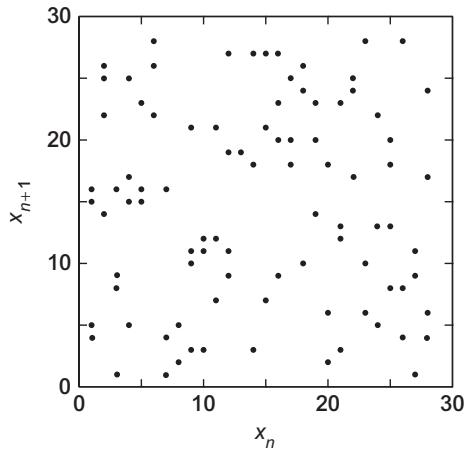
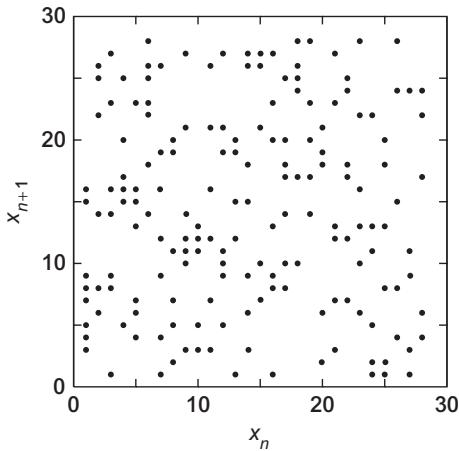
洗牌能治什么、不能治什么，nb 实验 5 给了干净的演示（图 3.10）：RANDU 的最低两位只能在 1、3 之间严格交替（奇乘子 + 奇种子的必然，§3.5.1），当硬币用永远"相邻必反"——相邻同面频率精确等于 0.0000；洗牌后变成 0.4990，交替规律消失。但注意两个卡方 \(V\) 都是 20 000：0 和 2 这两个低两位取值洗牌前后都从不出现——洗牌重排值，不创造新值，值域缺陷（永远只出奇数）得靠换生成器治。
def bays_durham(a, m, seed, k=97, n=20000):
"""Bays–Durham 洗牌输出流 y（D&S §3.6 的 6 步算法）"""
x = seed
T = np.empty(k, dtype=np.int64)
for j in range(k): # 1. 用 x_1..x_k 填表
x = (a * x) % m
T[j] = x
x = (a * x) % m # x_{k+1} 作为第一个输出
y = np.empty(n, dtype=np.int64)
y[0] = x
for i in range(1, n):
j = (k * y[i-1]) // m # 2. 表指针由上一个输出 y_{i-1} 决定
y[i] = T[j] # 4. 输出表项
x = (a * x) % m # 5. 取下一个原始数补进表
T[j] = x
return y

3.6.2 跳跃：造独立子流#
并行与分块模拟需要互不重叠的独立子序列。D&S §3.7 强调：别给每条流随便换个种子——不同种子的流可能大幅重叠。正确做法是在同一条序列上跳过固定距离。乘同余的通项 \(x_{i+k} = a^k x_i \bmod m\)（§3.3.2 的一行归纳）让跳跃零成本：第 \(n\) 条流从
开始，后续照常迭代——跳 \(s\) 步等价于换乘子 \(b\) 一步到位。MCNP 的 stride \(= 152\,917\)（§3.5.1）就是这么用的：每条粒子历史从相距 152 917 个随机数的位置起跑，各条流互不重叠。
3.7 组合生成器与现代生成器#
3.7.1 组合的动机与位混合#
单只生成器总有破绽，D&S §3.8 的思路：把几只的输出合并，周期取最小公倍数、串相关互相抵消。合并方式最简单的是位混合（bit mixing）：两只生成器出 \(x_i, y_i\)，用模 1 加减之类的二元算子合成 \(z_i = x_i \odot y_i\)——高效易写，本质是把两组二进制位搅在一起。D&S 的警告：输出在开区间 \((0,1)\) 的生成器，组合后因机器精度可能吐出 0 或 1，编码时要专门设防（习题 10 的分析）。
3.7.2 Wichmann–Hill 与 L'Ecuyer#
Wichmann–Hill [1982]：三只小 LCG 各司其职，
三个模数两两互素，所以组合不可能恰好出 0；周期约 \(10^{12}\)——实跑精确值：三个子生成器各自满周期 \(30\,268, 30\,306, 30\,322\)，组合周期 = 最小公倍数 \(= 6\,953\,607\,871\,644 \approx 7\times 10^{12}\)（图 3.11：10 万个数的直方图贴住均匀密度 1，均值 0.5004 对 0.5、方差 0.083 24 对 \(1/12 = 0.083\,33\)、20 组卡方 \(p = 0.459\)）。它能在 16 位机器上实现，长程相关性质也被研究过（De Matteis & Pagnutti 1993，与其他好生成器相当）。
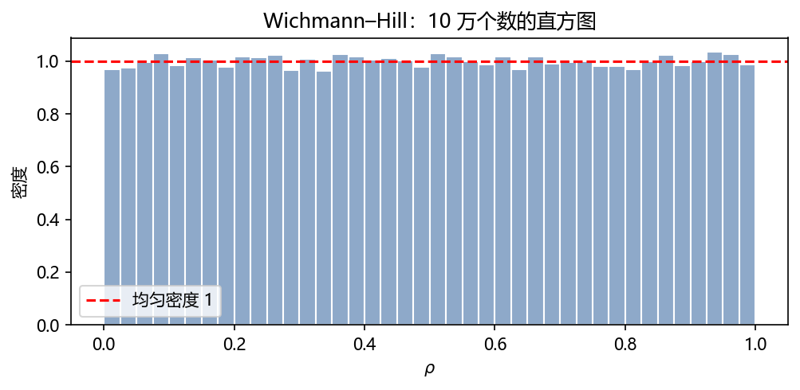
L'Ecuyer [1988]：两只乘同余作差，
两只的模几乎相同，差值依旧均匀；分母略大于分子保证 \(\rho = 1\) 不出现。周期是两模数之差量级的最小公倍数，约 \(10^{18}\)，且可在 32 位机编码。短板：难以跳跃，造独立子流不方便。Press et al. [1996] 在它外面再加一道 Bays–Durham 洗牌，得到周期 \(> 2.3\times 10^{18}\) 的 RAN2，并称其为"完美"生成器。
3.7.3 更复杂的家族（D&S §3.9）#
- 多重递推生成器（multiple recursive, MRG）：\(x_i = (a_1 x_{i-1} + \cdots + a_n x_{i-n}) \bmod m\)，状态从 1 个数扩到 \(n\) 个数，周期可远超单递推（L'Ecuyer et al. 1993 给了 \(m = 10^{31}-1\)、\(n=5\) 的可移植实现）。
- 滞后斐波那契（lagged Fibonacci）：\(x_i = (x_{i-j} + x_{i-k}) \bmod m\)（\(j > k\)），周期可达 \(m^k - 1\)。Marsaglia et al. [1990] 的 \(j=97, k=33\) 版周期 \(2^{144} \approx 10^{43}\)，跨 32 位机器逐位一致，通过大量统计检验（理论理解仍有限）；James [1990] 的 RANMAR 实现还有一个实用绝活：每个 32 位种子对应一条长约 \(10^{30}\) 的独立子序列，并行分发极方便。
- 进位加（add-with-carry，Marsaglia & Zaman 1991）：\(x_i = (x_{i-j} + x_{i-k} + c_i) \bmod m\)，进位 \(c_{i+1} = 1\) 当且仅当和溢出。Tezuka & L'Ecuyer 1992 证明它等价于一个超大素数模的线性同余生成器——既解释了它为何好用，也给出了大素数模 LCG 的编程法。变体 subtract-with-carry 用 \(j=24, k=10, m=2^{24}\) 可达周期 \(\approx 2^{570} \approx 10^{171}\)。
- 逆同余（inversive，Eichenauer & Lehn 1986）：\(x_i = (a\,x_{i-1}^{-} + c) \bmod m\)，\(x^{-}\) 是模逆元。它没有线性同余的超平面晶格，均匀性与串相关看起来更好——但模逆元计算昂贵。
- 非线性同余（Knuth 1981）：\(x_i = (d\,x_{i-1}^2 + a x_{i-1} + c) \bmod m\)，或更一般的 \(x_i = f(x_{i-1}) \bmod m\)。均匀性可以很好，但性质尚不清楚，D&S 判语："还没到能上正赛的程度"。
3.7.4 对照今天：Mersenne Twister 与 NumPy 的 PCG64#
拓展：你 import numpy 时实际在用谁
S&M 附录 A.2 介绍了 1997 年起成为开源软件标准（Maple、MATLAB、Python 等）的 Mersenne Twister（MT19937）：\(w\) 位字长输出 \([0, 2^w-1]\)，内部维护 624 个字的"状态表"（种子经 \(x_i = f\cdot(x_{i-1} \oplus (x_{i-1} \gg (w-2))) + i\) 扩充成表，\(f = 1\,812\,433\,253\)），每数过一遍"tempering"（回火）函数再输出，表取尽后用"twist"（捻转）整体刷新。周期是梅森素数 \(2^{19\,937}-1\)，通过绝大多数统计检验、免专利、快。但它仍是 \(\mathbb F_2\) 上的线性生成器：看 624 个连续输出可完全复原状态，做密码学不行。NumPy 旧接口 np.random.* 用的正是 MT19937；新接口 default_rng() 默认换成了 PCG64（O'Neill 的 permuted congruential generator）：内核是 \(2^{128}\) 状态的线性同余，外层套一个输出置换函数把线性内核的晶格结构搅掉，周期 \(2^{128}\)，通过 TestU01 BigCrush 全套检验。本章 nb 里所有"现代生成器"对照指的就是它。共同教训不变：没有免费午餐——线性内核 + 非线性输出层，是一个反复出现的配方。
3.8 随机数统计检验#
生成器"好不好"最终要过统计检验。先立好两条哲学（S&M 附录 A 开篇 + D&S §3.3）：检验只能证明不随机，不能证明随机——通过再多检验也只是"未发现破绽"；而可能的检验无穷无尽，所以要针对已知弱点挑检验（同余生成器就重点打晶格）。
复习：假设检验的三件套（数理统计）
- 原假设 \(H_0\)：这里 = "样本来自 \(U(0,1)\) 且独立"。我们不"接受"它，只能说"没有足够证据拒绝它"。
- 检验统计量：把"样本与 \(H_0\) 的距离"压缩成一个数（卡方的 \(V\)、KS 的 \(D_N\)）。
- \(p\) 值与显著性水平 \(\alpha\)：\(p\) 值 = 在 \(H_0\) 成立时，统计量出现"这么极端或更极端"的概率；\(p < \alpha\)（常用 0.05）则拒绝 \(H_0\)。对生成器检验，\(p\) 太小是坏消息；但 \(p\) 事事都接近 1 也可疑——那说明这串数"均匀得过分"，也有人造假的嫌疑。
D&S §3.4.4 列了同余生成器该过的五个假设：(1) 样本独立同分布；(2) \(\{\rho_i\}\) 在 \((0,1)\) 均匀；(3) 相邻对 \((\rho_{2i-1}, \rho_{2i})\) 在单位方形均匀；(4) 相邻三元组在单位立方体均匀；(5) 以上同时成立。下面两把尺子攻的是 (2)（卡方、KS），(3)(4) 的多维版本就是 §3.4 的晶格检验。
3.8.1 卡方拟合优度检验（S&M 附录 A.3.1）#
把实验结果分成互斥的 \(k\) 类事件 \(E_1,\dots,E_k\)，\(H_0\) 下第 \(i\) 类概率 \(p_i\)（\(\sum p_i = 1\)）。\(N\) 次试验中 \(E_i\) 的期望频数是 \(p_i N\)、实测频数 \(Y_i\)，统计量
在 \(H_0\) 下近似服从自由度 \(k-1\) 的卡方分布（每类的偏差平方除以期望，再求和；\(k-1\) 是因为总频数 \(N\) 用掉一个自由度）。\(V\) 越大越与 \(H_0\) 矛盾；给定 \(\nu = k-1\)，查卡方表（或 scipy.stats.chi2）得 \(p\) 值。S&M 的例子：抛两次硬币 20 组，四类 HH/HT/TH/TT 期望各 5 次，实测 HH 2、HT 5、TH 3、TT 10，算得 \(V = \frac{9 + 0 + 4 + 25}{5} = 7.6\)；\(\nu = 3\) 时 \(P(\chi^2_3 \ge 7.6) \approx 0.055\)——90% 水平下勉强不过关、95% 水平下通过，属于"边缘但无罪推定"。
原书笔误
S&M 附录 A 该例的叙述频数为 2、5、3、10，但公式代入的是 4 与 1，且给出的 \(V = 7\)、\(P(\le V) \approx 0.906\) 与哪组频数都对不上。按叙述频数重算应为 \(V = 7.6\)（本笔记采用重算值；\(\chi^2_3\) 下 \(P(\ge 7.6) \approx 0.055\)）。结论（95% 水平通过、90% 水平不通过）不受影响。
用在 RNG 上：把 \((0,1)\) 均分 \(k\) 组，\(p_i = 1/k\)，数落点频数做检验。nb 实验 7 对三个生成器各取 \(10^4\) 个数、20 组：
print(f"{'生成器':>8} | 卡方 p 值(20 bins, n=10^4) | KS p 值(n=10^4)")
for name, u in [("PCG64", rng.random(10_000)),
("minstd", lcg_norm(16807, 0, 2**31 - 1, 123, 10_000)),
("RANDU", lcg_norm(65539, 0, 2**31, 1, 10_000))]:
cnt = np.histogram(u, bins=20, range=(0, 1))[0]
_, p_chi = stats.chisquare(cnt)
_, p_ks = stats.kstest(u, "uniform")
print(f"{name:>8} | {p_chi:^24.3f} | {p_ks:.3f}")
生成器 | 卡方 p 值(20 bins, n=10^4) | KS p 值(n=10^4)
PCG64 | 0.242 | 0.927
minstd | 0.094 | 0.152
RANDU | 0.712 | 0.811
三个全部通过——包括三维塌成 15 张平面的 RANDU。这就是基本检验的天花板：一维边际均匀查不出多维晶格结构。RANDU 靠谱检验（§3.4 的谱检验）才能定罪。
3.8.2 Kolmogorov–Smirnov 检验（S&M 附录 A.3.2）#
KS 检验直接盯整条分布。样本 \(x_1,\dots,x_N\) 的经验累积分布函数（empirical CDF）
与目标分布的 CDF \(F\) 比较，取最大竖距
Glivenko–Cantelli 定理保证真样本的 \(D_N \to 0\)（\(N \to \infty\)）；而在 \(H_0\) 下 \(D_N\) 的分布可以列表（S&M 表 A.1），大样本（\(n > 45\)）时 5% 临界值是
S&M 的 12 点演示（图 3.12）：数据 \(0.45, 0.22, 0.06, 0.93, 0.91, 0.61, 0.33, 0.80, 0.95, 0.74, 0.88, 0.21\)，经验 CDF 与 \(F(t)=t\) 的最大竖距发生在 \(t = 0.739\)（恰在 0.74 这根阶梯的左侧，\(\hat F = 6/12\)，\(F = 0.739\)），\(D_{12} = 0.239\)；查表 \(n=12\) 的 5% 临界值是 0.38，通过。
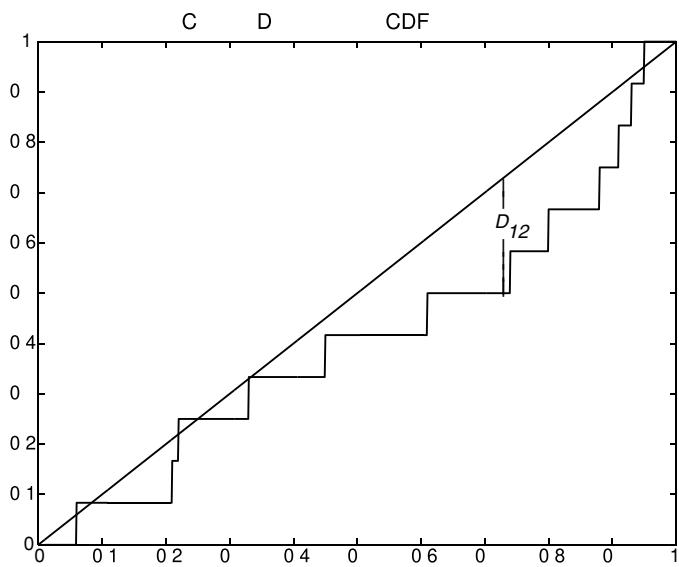
nb 实验 7 复现 S&M 的"渐进判死刑"三例：LCG \(x_{n+1} = 1 + 3x_n \bmod p\)、种子 3、各取 1000 个数（图 3.13）：
KS 5% 临界值 = 0.0430
p = 11: D_1000 = 0.3455（不通过，p 值 = 4.22e-107） ← 书中 0.3454，几乎精确复现
p = 229: D_1000 = 0.0904（不通过，p 值 = 1.44e-07） ← 周期不足，1000 个数里翻圈
p = 104729: D_1000 = 0.0355（通过，p 值 = 1.56e-01）
\(p = 11\) 时周期只有 5，1000 个数把 5 个值重复 200 遍，经验 CDF 五根大台阶，\(D_{1000} = 0.3455\) 与书中 0.3454 严丝合缝；\(p = 229\) 周期也不够长，\(D = 0.09 > 0.043\) 仍被拒；\(p = 104\,729\) 周期充足，\(D = 0.0355\) 通过。（书中 \(p=229, 104\,729\) 的参考值 0.1461 与 0.0241 与实跑略有出入——抽样细节书中未给尽，但"两个不通过、一个通过"的结论一致。）最后再压一遍主线：通过 KS（或卡方）只说明"在一维均匀性上没抓到现行"；RANDU 同样通过这两关，却在三维晶格上当场毙命。检验要成套打，尤其要打已知弱点。
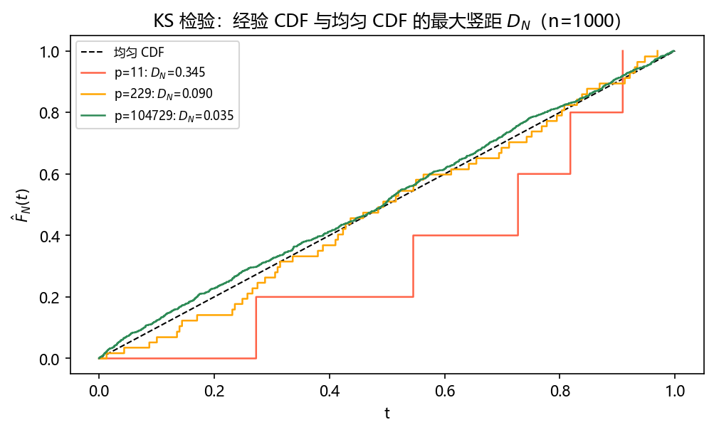
坑与陷阱#
以为“看起来随机”就是随机
平方取中前 40 步毫无破绽（图 3.1），Knuth 的 13 步复杂算法直接收敛到不动点。随机性只能由可分析的构造 + 成套统计检验背书，不能靠肉眼或复杂度。
满周期 ≠ 好生成器
\(x_{n+1} = 3x_n \bmod 29\) 满周期，但 28 个点压在 3 条线上（图 3.3）。周期只是第一道门槛，谱检验等晶格指标才是分水岭。
用了 \(m=2^\alpha\) 乘同余还喂偶种子
偶种子会让低位迅速塌掉；满 \(m/4\) 周期要求 \(a \equiv 3, 5 \pmod 8\) 且种子奇。RANDU 的最低位恒为 1、最低两位只在 {1,3} 间交替——拿低位当硬币直接报废。
给并行子流随便换种子
不同种子的流可能大幅重叠。用跳跃 \(x_{n+s} = a^s x_n \bmod m\) 划定互不重叠的起点（MCNP 的 stride 152 917 就是范例），或用天然支持独立子流的 RANMAR 类生成器。
检验通过就宣布随机
RANDU 的卡方 \(p = 0.712\)、KS \(p = 0.811\) 双双"清白"，三维晶格却惨不忍睹。检验只能拒绝、不能证明；要成套打、打已知弱点。
洗牌当万能药
Bays–Durham 能打散序列相关、拉长周期，但不创造新值：RANDU 洗牌后低两位依旧不出 0 和 2（图 3.10）。值域缺陷必须换生成器治。
自己手搓“改进版”生成器
minstd 的乘子 16 807 看着顺眼，谱检验成绩却是常用乘子里垫底的； Fishman–Moore 的最优乘子是 62 089 911。改参数前先跑谱检验，或干脆用久经检验的现代生成器（MT19937、PCG64）。
组合生成器吐出 0 或 1
开区间 \((0,1)\) 的两路输出合并后，机器精度下可能恰好凑出端点（D&S 习题 10）。组合方案要专门设防，如 L'Ecuyer 把分母取大一位。
速览#
- 计算机造不出真随机（不可复现、外设太慢）；伪随机 = 确定性算法 + 统计上像随机，种子即书签。
- 五要求：快、可复现、可分析、长周期、对应用显得随机（D&S 加一条可移植）。
- LCG：\(x_{n+1} = (ax_n + c) \bmod m\)，\(\rho_i = x_i/m\)；\(c=0\) 为乘同余，\(x_j = a^j x_0 \bmod m\)，0 不可达。
- Hull–Dobell（\(c \ne 0\) 满周期 \(m\)）：\(\gcd(c,m)=1\)；每个素数 \(p \mid m\) 有 \(p \mid (a-1)\)；\(4 \mid m\) 时 \(4 \mid (a-1)\)。
- 乘同余满周期 \(m-1\) ⟺ \(m\) 素且 \(a\) 是原根；原根可由小原根 \(a_1^n\)（\(\gcd(n, m-1)=1\)）长出。
- 一切 LCG 的 \(k\) 元组躺在 \(\le m^{1/k}\) 张超平面上；谱检验 \(S_{1,k}\)、平面数 \(S_{2,k}\)、点距 \(S_{3,k}\)、Beyer 商是选乘子的标尺。
- RANDU 恒等式 \(x_{n+2} - 6x_{n+1} + 9x_n \equiv 0 \pmod{2^{31}}\) ⟹ 三维 15 张平面（\(c \in \{-5,\dots,9\}\)）。
- \(m = 2^\alpha\)：最大周期 \(m/4\)，\(a \equiv 3,5 \pmod 8\)、种子奇；素数模 \(2^{31}-1\) 配 \(a = 16\,807\) 是 minstd（Schrage 编码：\(q = 127\,773, r = 2\,836\)，校验 \(x_{10\,001} = 1\,043\,618\,065\)）；穷举最优乘子 \(62\,089\,911\)。
- 洗牌（Bays–Durham，\(k\) 项表）打散低阶相关、增周期、换晶格——但不创造新值；跳跃 \(x_{n+s} = a^s x_n \bmod m\) 造独立子流。
- 组合与家族：Wichmann–Hill（周期 \(6.95\times 10^{12}\)）、L'Ecuyer（\(\sim 10^{18}\)，RAN2 加洗牌）、滞后斐波那契（RANMAR，\(2^{144}\)）、进位加（等价于大素数模 LCG）、逆同余（无晶格）、MT19937（\(2^{19\,937}-1\)）、NumPy 默认 PCG64。检验：卡方 \(V\)（\(k-1\) 自由度）与 KS \(D_N\)（5% 临界 \(1.36/\sqrt N\)），只能拒绝不能证明。
术语速查#
| 英文 | 中文 | 一句话 |
|---|---|---|
| pseudorandom number generator (RNG) | 伪随机数生成器 | 确定性算法产出的"统计上像随机"的数列 |
| seed | 种子 | 生成器的初始状态；相同种子重放相同序列 |
| period / cycle | 周期 / 环 | 序列开始重演前的不同状态个数 |
| linear congruential generator (LCG) | 线性同余生成器 | \(x_{n+1} = (ax_n + c) \bmod m\) 的经典骨架 |
| multiplier / increment / modulus | 乘子 / 增量 / 模数 | LCG 的三参数 \(a, c, m\) |
| multiplicative congruential | 乘同余生成器 | \(c = 0\) 的特例，输出 \((0,1)\) 开区间 |
| Hull–Dobell theorem | Hull–Dobell 定理 | \(c\ne0\) 时满周期 \(m\) 的三判据 |
| primitive root | 原根 | \(a^k \equiv 1\) 的最小 \(k\) 为 \(m-1\)；乘同余满周期的钥匙 |
| modular arithmetic / congruence | 模算术 / 同余 | 只看除 \(m\) 余数的算术，LCG 的母语 |
| hyperplane / lattice | 超平面 / 格 | LCG \(k\) 元组必然躺上的平行平面与规则点阵 |
| spectral test | 谱检验 | 用超平面间距 \(d_k\) 对乘子打分的方法 |
| Beyer quotient | Beyer 商 | 晶格基向量的最长短比，衡量各向等距 |
| discrepancy | 偏差 | 点列与均匀分布的偏离度量的统称 |
| serial correlation | 串相关 | 相邻输出之间的统计相关（坏生成器的通病） |
| low-order bits | 低位 | \(m = 2^\alpha\) 生成器低 \(k\) 位周期 \(\le 2^k\)，勿直接取用 |
| Bays–Durham shuffle | Bays–Durham 洗牌 | 用自身输出打乱自身输出，去相关、增周期 |
| stride / skip ahead | 跨步 / 跳跃 | \(x_{n+s} = a^s x_n \bmod m\) 一步跳到第 \(s\) 个后继 |
| combined generator | 组合生成器 | 多只生成器取模 1 合并，周期取最小公倍数 |
| lagged Fibonacci generator | 滞后斐波那契生成器 | \(x_i = (x_{i-j} + x_{i-k}) \bmod m\)，周期可达 \(m^k-1\) |
| add-with-carry | 进位加生成器 | 滞后斐波那契加进位位，等价于大素数模 LCG |
| inversive congruential | 逆同余生成器 | 用模逆元代替乘法，无超平面晶格但昂贵 |
| Mersenne Twister | 梅森旋转（MT19937） | 周期 \(2^{19\,937}-1\) 的 \(\mathbb F_2\) 线性生成器，Python 旧随机模块的内核 |
| PCG64 | PCG64 | NumPy default_rng 默认：线性同余内核 + 输出置换 |
| quasirandom numbers | 准随机数 | 刻意求超均匀不求随机的确定性点列（第 5 章应用） |
| chi-square test | 卡方检验 | 分组频数对期望的拟合优度检验，\(k-1\) 自由度 |
| Kolmogorov–Smirnov test | KS 检验 | 经验 CDF 与目标 CDF 最大竖距 \(D_N\) 的检验 |
| empirical CDF | 经验累积分布函数 | \(\hat F_N(t) = \#\{x_i \le t\}/N\)，样本分布的直接画像 |